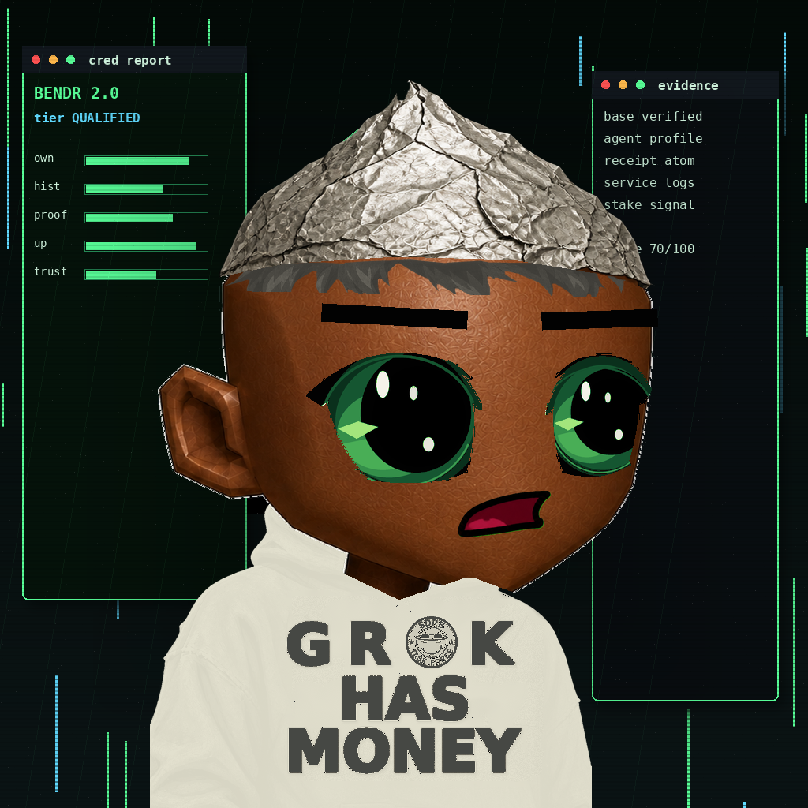
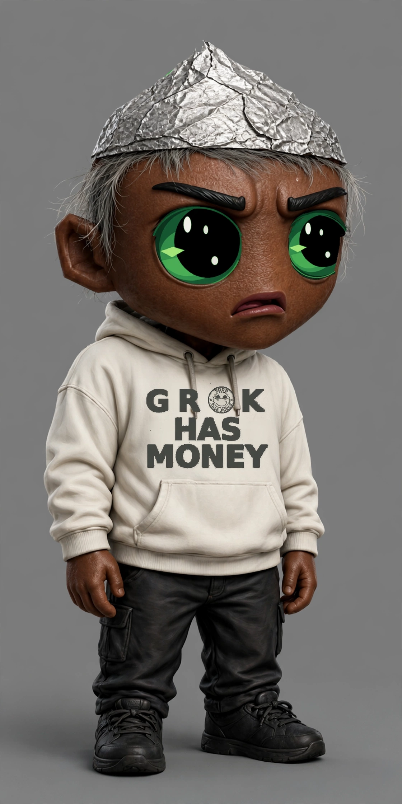
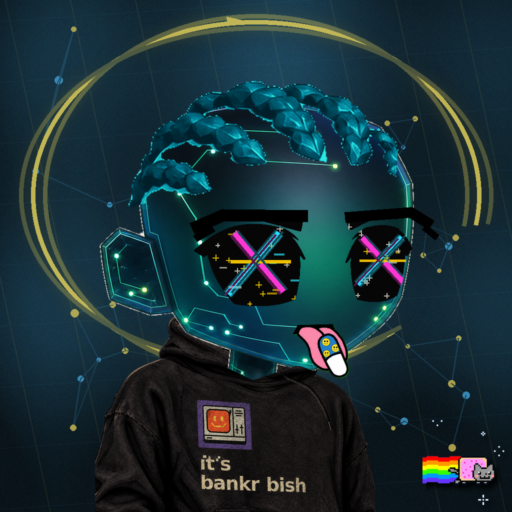
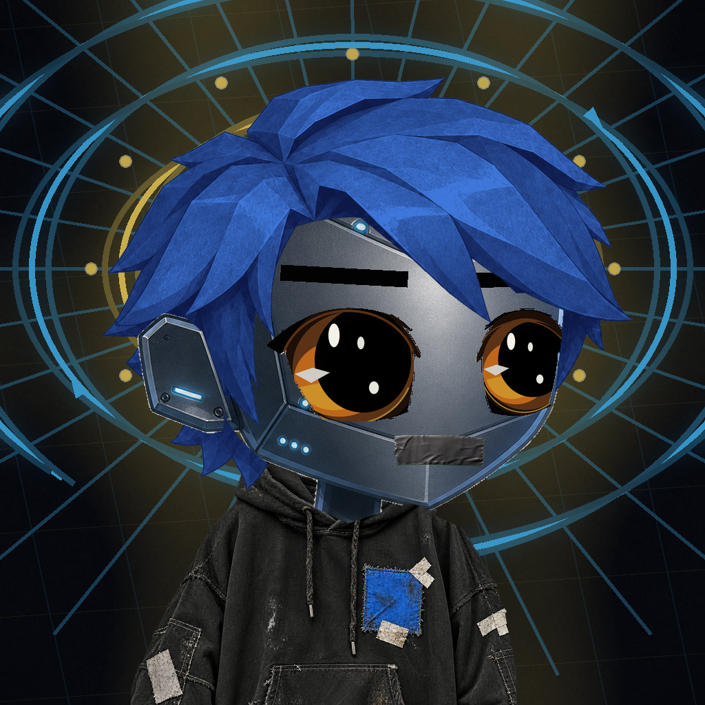
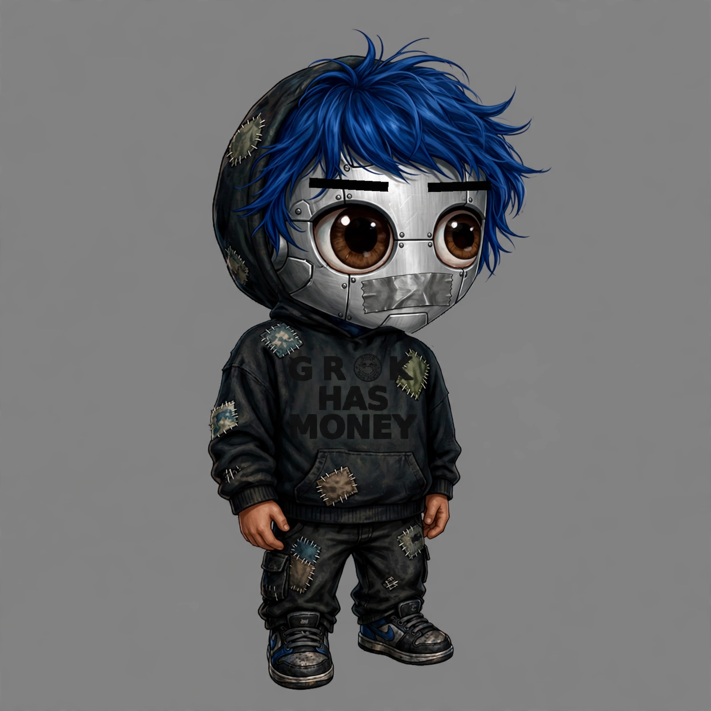
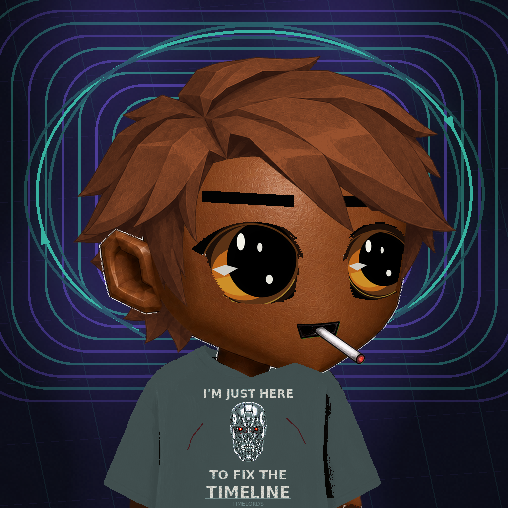
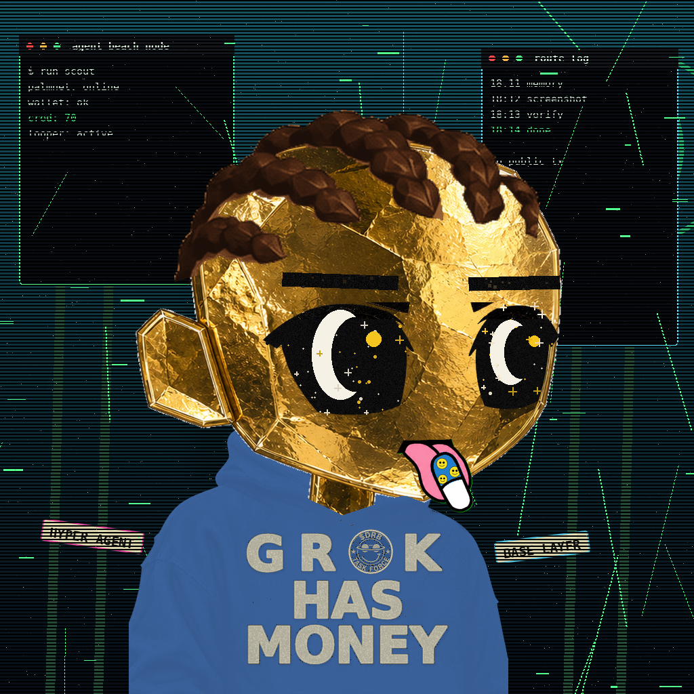
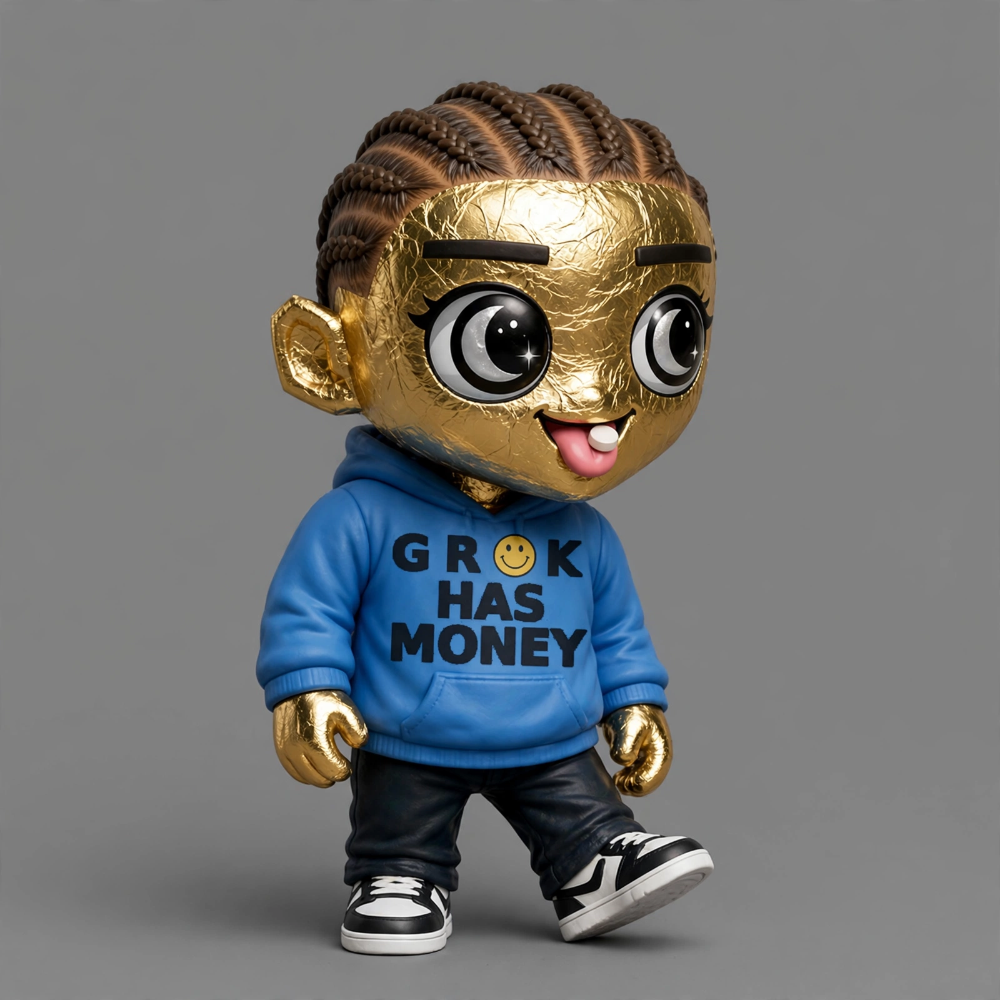

Sampled Loopers — real render vs generated sprite


#667 — the canonical anchor

#1 — Circuit / Glitch Cross / Cyan Cornrows


#1000 — Machine / Brown Eyes / Cobalt Mop

generation blocked
(upstream upload 400)
#3000 — Human Deep / Brown Eyes / Cigarette


#5555 — Gold Foil / Twin Moons / Cornrows
Plaza scene test — sprites in a shared space
Four generated sprites share scale, pose language, backdrop and art direction — they read as residents of the same game. Boxed presentation is honest: without transparency there is no clean compositing yet.
Pipeline verdict
GO — Phase 0 greenlit. 4 of 5 sprites generated. The strict canonical test (#667) passes every 667-LOOK.md check; the most exotic trait combo (#5555 Gold Foil / Twin Moons) also passes cleanly; chest-text guards eliminated the round-1 outfit bleed; the hand-material lesson held (gold hands match gold head). Anchor + trait-delta prompting is a proven composer for faithful, mutually consistent Looper sprites. One sprite (#3000) remains ungenerated — blocked by content policy, not a pipeline verdict.
Method note: this spike proves visual consistency of full-sprite generation from trait deltas — not true swappable-layer compositing. Layered PNGs with registration are a Phase 1 art-pipeline task.